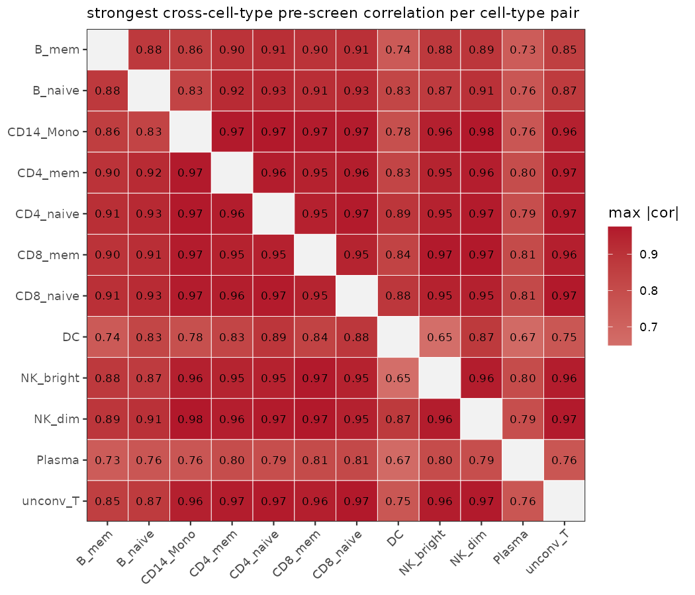
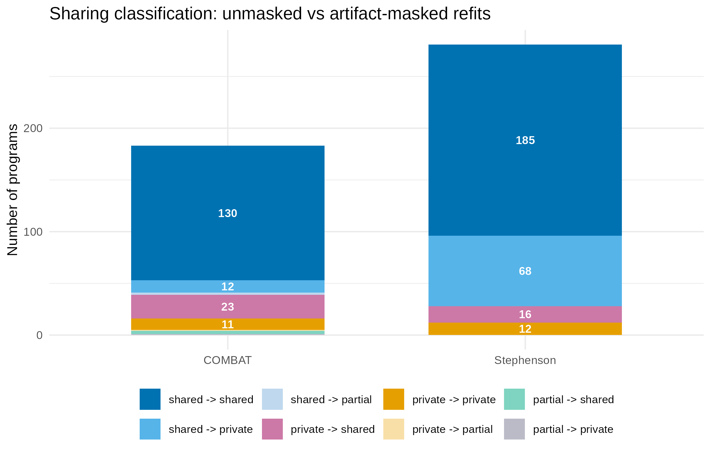
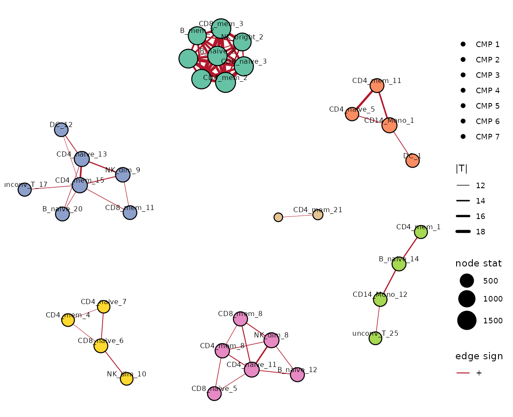
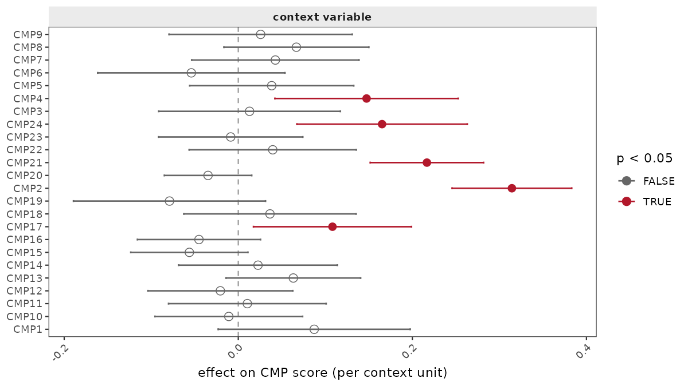

Case study: cross-cell-type programs in COVID-19 PBMC cohorts
real_data_case_study.RmdThis article walks through a full cellprograms analysis
of two real COVID-19 PBMC single-cell cohorts (Stephenson et al. 2021;
COMBAT consortium), demonstrating program discovery, cross-cell-type
coordination, program sharing, and the artifact-masking workflow. All
numbers and figures below are precomputed; the code chunks show exactly
how each result was produced and can be re-run against the public data
(see Reproducing).
Data and fitting
Both cohorts are processed to a donor × gene pseudobulk matrix per cell type (donors with too few cells of a type are dropped for that type):
- Stephenson et al. (2021): 12 cell types, 72–117 donors per type, 11.5k–12.9k genes per type.
- COMBAT consortium: 9 cell types, 89–122 donors per type, 11.6k–13.0k genes per type.
The fitting recipe uses the default EBMF machinery with a point-Laplace loading prior, K = 30 factors per cell type, and residualization of technical covariates (sequencing institute + sex):
library(cellprograms)
x <- as_cell_program_data(pseudobulk, sample_metadata = meta)
fit <- fit_celltype_programs(
x,
loading_prior = "point_laplace",
max_factors = 30,
features = "variable", n_variable_genes = 2000,
covariates = c("institute", "sex"), covariate_mode = "residualize",
var_type = 1, backfit = TRUE, nullcheck = TRUE,
seed = 1
)
fit <- canonicalize_programs(fit)This yields 318 programs in Stephenson and 222 in COMBAT (after the K = 30 cap and degenerate-factor handling).
Program sharing across cell types
program_sharing() matches programs across cell types by
loading correlation (permutation-tested), groups the matches, and scores
each group with a multivariate adaptive shrinkage (mashr) model to
classify every program as shared,
partial, or private:
share <- program_sharing(fit, n_perm = 199, seed = 1, z_thresh = 1.5)
share$summary # per-program classification
share$groups # sharing groups (lists of cell-type programs)The sharing structure at cohort scale — the strongest cross-cell-type
pre-screen correlation per cell-type pair (per-program heatmaps become
unreadable beyond a few dozen programs, hence the
level = "cell_type" aggregate):

The near-uniform dark map is the V(D)J artifact speaking: every cell-type pair has some program pair correlating at r > 0.7, which is why the per-program classification below is dominated by artifact-driven sharing groups.
| Cohort | Programs | Sharing groups | Shared | Partial | Private |
|---|---|---|---|---|---|
| Stephenson | 318 | 39 | 284 | 0 | 34 |
| COMBAT | 222 | 41 | 162 | 4 | 56 |
The dominant shared groups are biologically coherent: an interferon-driven program shared across essentially all immune cell types, a cell-cycle program, and lymphocyte activation programs. The single largest sharing group in each cohort, however, is the V(D)J gene artifact — see the next section.
The V(D)J artifact, and masking it
Immunoglobulin and TCR receptor genes leak into scRNA-seq count matrices as a technical artifact of cell capture (10x) rather than true biology. Because the same receptor genes are “expressed” across all lymphocyte types in a sample-correlated way, they induce a strong, spurious cross-cell-type program that dominates the sharing analysis.
cellprograms ships an artifact_gene_sets()
helper (V(D)J receptor genes, genotype-marker genes, sex-chromosome
genes) and an exclude_genes argument for refitting without
them. Artifact flagging before masking:
flags <- flag_artifact_genes(fit) # per-program artifact loadings| Cohort | Programs flagged (any artifact set) | Fraction |
|---|---|---|
| Stephenson | 249 / 318 | 78% |
| COMBAT | 163 / 222 | 73% |
Refitting with V(D)J + genotype-marker genes excluded
(artifact_genes(all_genes, sets = c("vdj", "genotype_marker"));
274 genes in the Stephenson universe) removes all
artifact flags and materially changes the sharing map:
fit_masked <- fit_celltype_programs(
x, exclude_genes = artifact_genes(all_genes, sets = c("vdj", "genotype_marker")),
loading_prior = "point_laplace", max_factors = 30,
features = "variable", n_variable_genes = 2000,
covariates = c("institute", "sex"), covariate_mode = "residualize",
var_type = 1, backfit = TRUE, nullcheck = TRUE, seed = 1
)
fit_masked <- canonicalize_programs(fit_masked)
share_masked <- program_sharing(fit_masked, n_perm = 199, seed = 1, z_thresh = 1.5)| Cohort | Programs | Groups | Shared | Partial | Private | Flagged |
|---|---|---|---|---|---|---|
| Stephenson | 284 | 32 | 204 | 0 | 80 | 0 |
| COMBAT | 185 | 35 | 158 | 3 | 24 | 0 |

The effect of masking is asymmetric across cohorts, which is the scientifically interesting part:
- In Stephenson, 68 programs flip shared → private: the unmasked V(D)J artifact was creating spurious sharing calls.
- In COMBAT, 23 programs flip private → shared: artifact loading contamination was hiding real shared biology that only becomes detectable once the artifact genes are removed.
Neither direction is the “expected” one — the artifact can both create and mask sharing, which is why refitting (rather than post-hoc filtering) is the recommended workflow.
Sensitivity of the sharing calls
Two preregistered sensitivity analyses (see
benchmarks/cmp_detection/PREREG_cmp-bench-v1.2.md for the
framework):
z_thresh sweep. The V-estimation step inside
program_sharing() falls back to the identity matrix when
too few genes are “null” (|z| ≤ z_thresh in every condition of the
group). Sweeping z_thresh over {1.5, 2, 2.5, 3} across all 320
group-fits (both cohorts, masked and unmasked): the null set is
non-empty in 117 group-fits, off-diagonal V entries are nonzero in only
10, and no sharing classification flips at any
threshold. The identity fallback is structural (loading
posterior SDs are small relative to effect sizes) but harmless — sharing
calls do not depend on it.
Matching calibration. Re-running the cross-cell-type matching at n_perm = 1999 (vs 199): edge Jaccard 0.78 (Stephenson) / 0.82 (COMBAT), sharing-group ARI 0.85 / 0.89, group counts 39 → 41 and 41 → 42. Matching is stable at realistic permutation budgets.
Coordinated multi-cell-type programs
find_coordinated_programs() detects coordinated
multi-cell-type programs (CMPs) — donor-level score covariation across
cell types that permutation tests against donor-label shuffling. Run on
the masked fits (the recommended workflow), with severity context
association adjusting for institute and sex:
cmp <- find_coordinated_programs(fit_masked, n_perm = 999, seed = 1, min_donors = 20)
cmp$cmps # per-CMP member programs and consensus scores
cmp_context_association(fit_masked, cmp, "severity",
covariates = c("institute", "sex"))The masked refits yield 24 CMPs over 598 significant
edges (Stephenson) and 21 CMPs over 255 edges (COMBAT);
the unmasked cap-30 fits give 27 and 25 (see
benchmarks/cmp_detection/results/real_K10_K30_K40_summary.csv
for the full cap-10/30/40 grid). The network view — node size = pooled
evidence A_v, edge width = |T|, color = CMP membership:

Severity association per CMP (linear model on CMP consensus scores, adjusting for institute and sex; solid red = p < 0.05):

Several CMPs are significantly severity-associated (strongest around |estimate| ~ 0.2-0.3), while most are not — the coordination structure carries both disease-relevant and disease-irrelevant multicellular programs. CMP membership overlaps the sharing groups but is not identical: sharing (mashr) is a loading-space statement, coordination is a score-space statement, and the two views agree on the biology (interferon, cell cycle) while disagreeing on program-level details — which is precisely the information the two-test workflow is designed to surface.
Reproducing
The full pipeline (data download through figures) is scripted in the repository:
-
benchmarks/cmp_detection/— sharing benchmark + preregistrations -
benchmarks/divas_comparison/— head-to-head comparison against DIVAS on the Su et al. COVID-19 multi-omics case study - Real-data fits are large and not bundled with the package; the scripts rebuild them from public data (ArrayExpress E-MTAB-8731 for Stephenson; COMBAT via the consortium release).